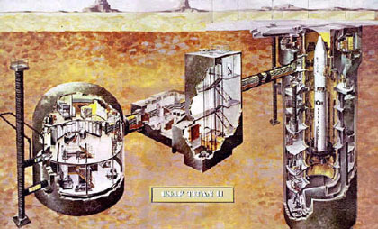
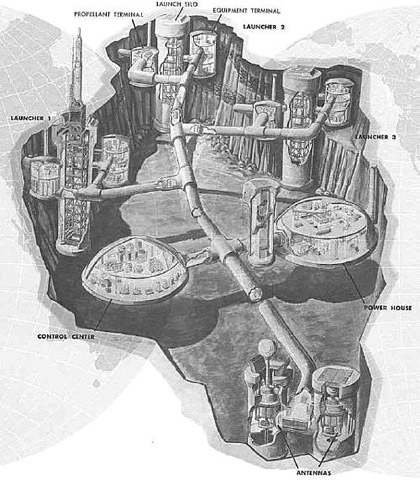

THEORY BEYOND THE CODES
Special Issue: In the Name of Security
Silo Psychosis
Fabienne Collignon
In Don DeLillo's Underworld (1997), Klara Sax -- discussing her deactivated B-52 desert art project -- reflects on Cold War power, which she describes in terms of a visitation at night, as "a force" that "comes into people's sleep". She continues:
Now that power is in shatters or tatters and now that those Soviet borders don't even exist in the same way, I think we understand, we look back, we see ourselves more clearly, and them as well. It was stable, it was focused, it was a tangible thing. It was greatness, danger, terror, all those things. And it held us together, the Soviets and us. Maybe it held the world together. [1]
Klara Sax's "weird nostalgia" [2] for the balance of power comes in the form of remains, the hulks of long-range bombers stripped of most of their hardware; her longing manifests itself in relation to "a tangible thing", and materialises in the waste products, the ruins of an overbearing order.
This article is concerned with the meaning of a Cold War relic, the missile silo, whose protective space encloses the stratospheric nuclear rocket that supersedes the B-52. The project's methodology reflects Paul Virilio's approach in his exploration of World War II military space, Bunker Archeology (1975; 1994), an investigation of an abandoned architecture of war, overcome by a more deadly logic, the "speed of liberation which [...] free[s] war of all constraints". [3] As a cultural theorist, Virilio's work examines "the aesthetics of disappearance", which prompts developments like the miniaturisation of technological devices and the extermination of space through time, through the delivery of weapons systems. His engagement with archaic martial structures itself seems nostalgic, as if wishing to "measure things", to "measure destruction" [4] according to a perspective that no longer exists. Yet nostalgia does not necessarily prevent inquiry, nor is it obvious whether this is an emotion at play here; Bunker Archeology analyses the vestiges of a culture of war, of "littoral boundary stones" specific to an era: these "worthless object[s]" serve as "illustration[s] for a story, the story of total war". [5]
His objective, so Virilio notes, is to "hunt these gray forms until they [...] transmit [...] a part of their mystery, a part of the secret"; [6] his narrative is, then, as much comprised of hunting as of haunting, less motivated by a desire to return to the stabilities of a bygone conflict than interested in negotiating its spirits. He seeks to address the "immensity of this project", total war "revealed [...] in its mythic dimension", [7] the mortal danger encased in concrete, so "tangible" in this world but also possessing affinities with others, with the realm of the dead or the reaches of interstellar space. His argument is split up into short essays that expound on the facets of military space: its links to the "funeral archetype", [8] as well as to works of science fiction and to fantasies of survival. As an architecture that straddles different orders of existence, the bunker functions not simply as a museum piece that is cordoned off in time, but rather initiates a study about developments of technology that, despite continuous adjustments, manage to leave monuments, cemented by fictions of shelter.
Bunker Archeology concludes with an afterword added in 1991, after the end of the Cold War. The contention of Virilio's book, however, does not relate to endings but to the continuum of war, to shape-shifting military techniques and strategies disappearing into systems whose power is "exorbitant", [9] invisible, instantaneous. The study of ruins subsequently also compels a confrontation with unceasing technological "progress", with the industry of war that keeps moving into other environments and invents new enemy formations: the remains of the last war may be all that is left before the final disintegration of material techno-culture.
The objective of this article is then not solely archeological; the "gray forms" under investigation also prompt the formulation of an argument which contends that the Cold War, or the systems of thought governing its ideological confrontation, has not ended. The "long game of détente" between two great spatial powers might have been abandoned, but the Cold War, as Adam Piette notes, "continues to live and thrive within our collective imaginations as a security state hysteria". [10] Closure is only presumed; the Cold War's "paranoid field of fantasies" [11] form the spectral vestiges of current policies of intervention, at home and abroad, of wars against mythologized enemies. The threat of WMDs and of stealth weapons entering the body politic surreptitiously endures as a set of conceptual metaphors that justify the constant upgrading of the Cold War nucleus: the continuing fantasy of self-preservation, of protection against an enemy that, while monolithic, is also imperceptible, a pod-people hiding, waiting, in sleeper cells.
As such, this study enters the missile silo to look for those prevailing narratives of siege, their expressions in concrete and gadget, and to offer, as Piette suggests, a theory of the unconscious. This theory is less a definite line of reasoning than a calling of attention to a "paranoid field of fantasies". The investigation of subterranean masses raise concerns relating to the persistence of Cold War control systems; the silo functions as a tangible articulation of a state of mind whose psychoses have been walled up and kept underground, buried, so as to culminate in an end-point. To concur with this premise is to adopt a dangerous philosophy which is oblivious to the continuum of war, perpetuated through secret weapons development that goes on unseen and frequently unchallenged, thereby preventing the extrication from the deathly logic of techno-culture.
The premise of this article is to "[activate] the old sites" [12] of the missile silos located in the heartland, holding in place the relentlessly modernised nuclear core of America's strategic force. The development and decommissioning of particular Intercontinental Ballistic Missiles (ICBMs) invariably prompt the adjustment of their respective storage facilities; these spaces, interred yet also unearthly, are approached through disparate sources that are variously receptive to the submerged forces comprising security state culture. The works under consideration trace back from DeLillo's Underworld to Stephen King's The Stand (1978) -- combining the military strategies of past (nuclear) and future (bio-technological) wars -- and Thomas Pynchon's Gravity's Rainbow (1973), a novel about the ICBM prototype. These texts discuss the changing nature of apocalypse and the possibility of a protective power -- which is secretly offensive -- against evolving terrors, replacing rockets with shifting antigens.
Though ostensibly no longer occupying the dead centre of techno-horror, the atom bomb's effects on the imagination remain potent; the gadget still drifts through underworlds of thought just as its interpretation as a deterrent persists, and its support structures, like in the above-mentioned novels, are sought out as defensive shields against new designs. Engineered bio-forms are, of course, bomb subsidiaries that frequently maintain links to the "zero hour" glows of nuclear detonations; [13] the legacy of mutations refers to 1950s science fiction film, where Atomic Energy Commission (AEC), DoD and Department of Agriculture appear to clot into one incorporation. Releases like Them! (1954) and The Beginning of the End (1957) indicate agency mergers while further demonstrating the shared characteristics between agriculture and war, a convergence that is most apparent in the silo, where metaphors of missile and food storage coincide.
The interface relating cultivation and homeland security does not simply materialise in concrete structures; it also sits at the heart of America's mythologies of creation, such as in Thomas Jefferson's thinking which shadows Cold War National Security directives issued to step up the production of engines that are concurrently stratospheric and implanted in the earth. These are the "mythic dimensions" of total war, of the cold climate sustained by machine-plants, internal yet external; the spaces they leave behind as they reach the end-points of their respective abbreviated life-spans are now, in the era of the colour-coded escalation curve, appropriated as real estate as their vacated interior is still bound to the need to seek "a place of sheltering from disaster" [14].
The retrofitting of decommissioned installations functions like a twin impulse to the exploration of ruins, both endeavours that are propagated through the web of postmodern technologies developed during the Cold War. The politics of such forums is, at times, difficult to gauge because of the meshing of superpower longings, Americanism and vague, almost unconscious, critique on the one hand, and, on the other, the compromised protest-reclamations of individuals, like Ed Peden, situated at the forefront of silo retrofit usage. The ramifications of this desire -- to enter and/or inhabit Cold War technology -- emerge from the same roots: the fantasies of absolute mastery that are at once nostalgic and paranoid. Against the scope of creeping war machines and phantom invasions, the compressed steel cylinders assist the transferral of emergency conditions into a private homeland security that matches the state's hysteric, prismatic infrastructure. The requisition of derelict equipment, evidence of which is available at the speed of war, terminates this project; the rainbow-coloured threat effortlessly dyes the monochromatic dreamworlds of nuclear weapons installations.
Silo Implant
In his book on the development of ICBM guidance design, Donald Mackenzie discusses the internal logic of technological change, examining the arc the rocket traced through bureaucracy. His term for the vehicle's ascension from inner to outer space is "the missile revolution", which progresses largely from below, though he also refers to the same phenomenon in terms of "technology creep": [15] machines steal into strategy and seem to edge towards self-awareness or autonomous evolution. The missile silo is a historical entity, whose circumstances of existence were gradually fulfilled; it further carries metaphorical significance, a transgressive proximity to apparently discrete and antithetical orders. Un/earthly, un/dead, the alternating presence and absence of the prefix "un" articulates, then hides, the bifurcation of worlds to be accessed all at once in the storage configuration that folds around the mechanism at its heart.
The "missile revolution" affected the rockets' operational spheres, advancing via stages in which the missile lay horizontally in coffin-shaped shelters, and finally arrived at an underground arrangement identified as HGM-16F: the silo. [16] An airtight, usually cylindrical receptacle with above-ground origins in agriculture and used for storing crops or grain, the silo permits a negation of the seasons, a certain indifference and detachment to its surroundings. Its monolithic concrete form, climbing out of the scenery, is aggressive; its severely functional architecture a repository of unease. The absolute, blind mass of its appearance carries aspects not entirely of this world, features that, because they sever contact with adjoining regions, approach the extraterrestrial. Analogies between Mars and the Midwest find their correlations in the approximation of farm building and Unidentified Flying Object (UFO), too. It is the separation from the environment, the creation of an interior space without any obvious openings, a realm off-limits to even the sightlines, that incites anxiety or impressions of terror while also encouraging close encounters, such as in Stephen King's The Stand, with "weird, alien" organisms that "[can] see tones of the spectrum that human eyes could never attain to". [17]
A novel on the accidental outbreak of an engineered bug -- the fail-safe containment mechanism malfunctions and is delayed, allowing a carrier to escape -- The Stand is a story about the possibility of shelter against a presence described as viral, a "gas" that "floats silently away and dissipates". [18] The need for protection, instilled here with its own "mythic dimension[s]" -- a confrontation between the infected and the resistant -- propels Nick Andros into the cellar of a barn with an attached silo in order to seek refuge from a tornado. Inside, everything becomes "ghostly" insofar as it is "wavering" between materiality and absence, just as the construction itself, bordering on unusual atmospheres, offers gateways, or points of contact, between one world and another. Simultaneously a shelter and a "prehistoric monster", a shape revealed as "the boards" of the barn are "stripped off the sides", [19] the storage building -- used in Silo Killer (2002) to hoard the hacked-up corpses of a bunch of college kids -- imparts disquieting slippages. It inclines itself, "like rockets gone awry", [20] toward disaster; that is, the death, rather than the sustenance, of multitudes.
In Bunker Archeology, Virilio compares the solid volumes of bunkers partly submerged in sand to "works of fiction", to a "spacecraft parked in the middle of an avenue" or else out in the open, on the margins of the land, "announcing the war of the worlds, the confrontation with inhuman species". [21] Throughout his piece, Virilio mentions "terrific atmospheric pressure", and talks about a "new climate" to which these military structures respond, but which they also engender; their implantation in the earth registers a conflict, a "collage of two dissimilar realities". [22] Above all, he notes the correlation between military architecture and the "funeral archetype" with regard to aspects of tightness, envelopes of steel and concrete wrapped around the individual:
Slowed down in his physical activity but attentive, anxious over the catastrophic possibilities in his environment, the visitor in this perilous place is beset with a singular heaviness; in fact he is already in the grip of that cadaveric rigidity from which the shelter was designed to protect him. [23]
With the resolve to inter life in arrangements that thrust steel into soil, the "works of fiction" concern narratives of protection against a landscape in which "everything is volatile, [...] flammable"; shields against heat and light hence necessarily move into the "very thickness of the planet". [24] The constrictions of coffin-shaped shelters, however, do not cater to the "visitor", nor to any human being, but are instead fitted to accommodate the long, sleek silhouettes of ballistic missiles. Thus, the movement toward the interior, or the structure's disappearance from the surface, which is an attempt to drop out of satellite networks so as to escape the invisible rays of atom bombs, EMP (Electromagnetic Pulse) and electronic arsenals -- "weird peeled eyeball[s]" [25] up in the sky -- reflects a degree of care allocated to the weapon, not to its victims. [26]
In Thomas Pynchon's Gravity's Rainbow, Slothrop, entering the German heartland's rocket fabrication facilities, wonders, while travelling through the enormity of the place, if "[p]erhaps Titans lived under this mountain, and their skulls got harvested like giant mushrooms". [27] The corresponding metal shapes underneath the expanses of the plains, Titan II, were set up in a silo blueprint drafted for the hot-launched British Blue Streak, a project almost immediately abandoned. [28] The design for an in-silo launched rocket was subsequently transferred to Titan II, which -- despite being liquid-propellant and requiring considerable preparation before blast-off -- remained operational until 1987 because of its sheer size and the bulk of its payload. Its storage and launch sites were devised to withstand three basic modes of attack: massive bomber deliveries, small surprise packages and missile assaults [29] that were to be counteracted through the scattering, hardening and concealment of deployment configurations.
Prior to such developments and despite their capacity to ignite the world, nuclear weapons were fragile, delicate mechanisms that required tenderness, and envelopes of shielding materials; they were vulnerable deterrents, themselves in need of defence. The storage arrangements the missile was inserted into became, in time and like the delivery vehicle itself, structures that existed without, or with minimal, recourse to external referents. As such, the facilities embracing the weapon were adjusted to replicate the ICBM's black box procedures -- namely its inertial navigation operating with no outside input -- in order to provide a similarly self-sufficient environment; the facilities thus act as a mirror-image of the devices they cradle. What eventually explodes as uncontainable light was slipped into settings that are blind; the black box, in this instance, refers as much to the rocket's guidance as it does to the conditions of its maintenance.
The "Raketen-Stadt", [30] or missile silo's low-level shafts, whose enormous scale and cross-headings indicate conglomerations like a city, function to protect -- in deep space and through hard lining -- the nation's deterrent, which lies submerged like a sleeping giant dreaming of motion. Broken up into multiple equipment areas, sets of platforms that burrow into the planet with a single purpose, the silo is a constellation that, forming around a still dead star, provides life support to the rocket. The site supplies an operational capacity that is inevitably short-lived because it is always modified, thereby dispensing with what Herman Kahn, in a talk at RAND's Protective Construction Conference in 1960, terms "illusions of permanence". [31] Though time -- at least concerning the effective functioning status of the military installation and in relation to constantly evolving technologies -- is not limitless, space nonetheless seems infinite down here.
The world created is titanic; it is a labyrinthine formation whose tunnelling and foundations are, once completed, outfitted with electronics, control points and panels that manage temperature control, the transfer of gasses and the lines of communication between equipment in different parts of the arrangement. The various terminals, in a standard Titan II launch complex, consisted of a launch control centre, which was a domed cylinder with a steel cage suspended inside so as to remove it from ground motion; a blast lock intending to shield the compound from a nearby nuclear detonation; an access portal, plus entrapment area preventing unauthorised entry; as well as a cableway and silo. The facility's main function emerged through the vocabulary arrested in the term and material expression of isolation, in the solid, often cylindrical geometries of the missile complex; inside the silo, a shaft 145 feet deep and carved up into nine equipment levels, [32] sits and waits the rocket, a sentinel under a field of space.

Titan II Launch Complex: Impression, Soleil Levant.
Construction began, so Stumpf writes, with an "open cut", a network of "all-weather access roads" [33] travelling towards the site of descent, where masses of metal push into the blank landscape of the plains. A scope of "long runs of cable or piping" and "structural steel such as girders or rebar" [34] are inserted into what, in the accompanying illustration (Fig. 1), is an impressionist rendering of the shades of the earth as a body of water. The source of the play of light is no longer, or not yet, a red fireball suspended in the sky, but rather is of uncertain origin, a radiance lingering around the mechanism of the rocket. The drawing, providing a window into another world, a map to a glimmering city, locates dreams of utopia as resting with the missile -- a "cold dead lump of metal", containing the "potential for so much heat", so much "silent white light" [35] beneath its smooth surface. Meanwhile, despite the drawn-out, violent procedures to sink it into excavated gaps, the finished form of the installation, concurrently linked to and separated from the ground, approximates the metallic to the organic. As corridors stretch onwards until they reach power nodules, the self-sustained organism of the plant, a Titan I cell (Fig. 2), materialises in its architecture the "fearful symmetry" [36] between nuclear power and transmutation.

Titan I silo-cell.
The facility, however, so akin in its communications systems to the circulation of blood, is effectively of an inhuman order, its workings operating out of outsized gadgetry that dwarfs attendant figures. Here, employees get smaller; ahead of the trend to reduce technological devices, it is the human element that shrinks -- the aesthetics of disappearance also comment on awareness extinction in workers diligently plotting mass murder. Up until further ICBM development that produced the much smaller Minuteman missile and Multiple Independently Targeted Re-Entry Vehicles (MIRV), Cold War technology was linked to "Titans", a construct that obscures, or minimises, the involvement of shrinking men in the service of an overarching ideology. The result is a totally technologised space encrypting death fantasies delivered by gleaming devices; the totality of the "Raketen-Stadt" gives out a luminosity with such "depth and brilliance" [37] that it seems otherworldly -- as if light was emitted from the walls, the lining of the place, so much like a thing from outer space.
The silo's polished grandeur and diamond-hard surfaces combine with an array of computer technology, which occupies every available space and feeds information to the nucleus. This environment is as much subterranean as it is extraterrestrial, its radiance and whitewash indicative of so many interstellar vehicles: the Discovery in Kubrick's 2001 (1968) or the USS Enterprise approaching translucency in J.J. Abrahms' Star Trek (2009). As an impression, the whiteness, coolness, the brilliance of the gadgetry associated with extraterrestrial intelligence belongs to a convention aware of the shared patterns between machine and science fiction: the rocket, in any case, already is a space ship.
The aesthetic form of the missile silo is, by extension, an otherworldly, monumental technology, establishing a universe, a sphere of existence severing points of contact with the host planet. This type of machinery, diminishing -- if not yet annihilating -- life by its sheer presence, appears not to belong to earth but to alien intellects which H.G. Wells describes, in The War of the Worlds (1898), as "vast and cool and unsympathetic". [38] The network, consequently, extends out and nonetheless, it is still a part of this world. In the rocket city's solid geometries, conscious living forms -- so close to being atomised -- are rare and transient creatures that, insect-like, atrophy in districts of technological density.
ICBMs define and thereby materialise future worlds not only through the installations, but the missile silo also operates as a dreamwork founded on an ideology of utopian preservation by way of the nuclear device. The atom bomb serves as silage; the strategy that interprets it as the core of the nation's capacity for survival replicates Jeffersonian principles linking issues of endurance to farming practices, whose applications provide both the groundwork and "backbone" of democracy. [39] Though strategic thinking is no longer limited to geography, but extends into the stratosphere, missile development, right from the start, is associated with soil through the Nazi doctrine of "Blut und Boden", which is the myth of a return to "nature" though all is, in fact, technologised. The V-2 initiates ballistic trajectories; its engineers are transplanted from one heartland into another, whose mythology of nation-state and empire refers to analogous roots. Imperial sustenance/expansion breeds on family farms, which in turn feed the United States: at stake is national salvation, democracy in its "purest and most classic form". [40] The "vigor" of the republic depends on the cultivation of "things of the earth" [41] to sprout imperial superpowers.
The interface between agricultural and military aspects arises out of the surrounding hostility, too -- the land that, paradoxically, is equally ally and enemy -- while it similarly becomes apparent in their common concerns, the matters regarding times to come. In The Unsettling of America (1986), Wendell Berry opposes what he calls "the militarising of food"; his book is a repost to Richard Nixon's Secretary of Agriculture Earl Butz's statement that "Food is a Weapon". [42] The argument refers to the 1972 grain sale to the Soviet Union, and functions on the basis that surpluses and agricultural exports can be withheld in order to starve people into compliance, while also helping to "induce", according to Butz, "purchasing power into countries on our defence perimeter". [43] Other suggestions, lying hidden beneath such catchphrases, involve the usage of chemical warfare, where mists of rainbow herbicides shroud the crops of enemy nations. Further coinciding with martial interests and preparing for prospective catastrophe, the "cult of the future" [44] -- which is a temperament or prerequisite of agriculture -- really is a cult of future death.
The rhetorical discourse of National Security Council (NSC)-68 from 14 April 1950, which reassessed "United States Objectives and Programs for National Security", hosts agricultural references to transform offensive measures into shielding techniques. Designed to resist a monolith, the assumed centripetal, and by now nearly ballistic, force of the Soviet Union, the directive invests the growing US defence perimeter with plantations to "foster the seeds of destruction within the Soviet system" [45]. The amalgamation between machine and organism becomes implicit: the sown crops are shoots of steel. Missile farms [46] and plants in intra-terrestrial space ultimately expand the metaphor of an arsenal contained in grain installations.
Missile launch complexes are then, to appropriate Virilio's description, "almost botanical" [47] in nature and converge with cellular formations; rockets -- the "skulls" of "Titans" -- are "giant mushrooms", giving an indication of recurring events in dreamed scenarios about atomic power warping creature volumes. Outsized vegetables, for one, often appear in Hollywood productions, such as the 1957 movie The Beginning of the End, in which the settlement of Ludlow, Illinois vanishes overnight. In this instance, they are grown by the US Department of Agriculture's Experimental Station, which is the only facility in the vicinity of the little trashed town that "ha[s] been playing around with radioactivity". [48] In a shed, inside a black metal box on top of which stand some specimens of nuclear gardening, Ed Wainwright, the project director, keeps his fertiliser, "a sort of artificial sun" that causes the "growing process to continue night and day"; as Wainwright explains, giant greens, a "hybrid that can be eaten [...] one day", are "the future of the American farmer".
So, however, are 8-feet tall locusts -- whose "cell division", after ingesting "some of the radioactive plant food [...] accelerated immediately" -- as well as enormous ants, a mutation "probably caused by lingering radiation from the first atomic bomb test", [49] as Dr. Medford, also of the Department of Agriculture, suggests in Them!. As outcomes of military ventures and programs conducted by investigative, or indeed industrialised, farmers coincide, and the Department of Agriculture is summoned to national disaster zones to solve the puzzles of giants, the gaps separating food and weapons, plants and bombs, further recede. In remote installations, "pocket[s]" in "albino" topographies, [50] the weapons systems -- in stealth in their silos distributed "like seeds" across air bases and states -- are "waiting to bloom". [51] On maps, Strategic Missile Squadrons (SMS), or Wings (SMW), resemble cracks in the fabric of the territory; the rifts provide evidence of "Titans" lying beneath the surface, ready to hatch. The kernels they eventually distribute out of their automated farms generate, within a certain radius, only absence; round about ground zero, scenery disintegrates into ashes, into empty space. A little further, though, amidst the ruins, as John Hersey records in Hiroshima (1946), "up through the wreckage of the city, in gutters, along riverbanks [...] was a blanket of fresh, vivid, lush, optimistic green"; the atom bomb "had not only left the underground organs of plants intact [but] it had stimulated them" [52] -- radioactivity, indeed, operates as an unparalleled fertiliser.
Silos, then, hold the "backbone" of democracy, winter wheat or missile hardware, in protective embrace. Their tight cylinders, the receptacles for the "preservation of the inalienable rights of man", [53] retain and "[keep] alive that sacred fire" [54], which are the virtues of self-contained existence -- an essence as invisible, if not as enduring, as radioactivity -- that Thomas Jefferson finds in the soil. According to this discourse's metaphorical constructions, the survivability of democratic government consequently depends on crops implanted in the ground, in sub-surface storage outposts themselves buried in code words and abbreviations; that is, in language levels that plunge as depths increase: "a hundred plots go underground". [55]
Twin Impulses
The secret landscape of the Cold War has, in recent years, been subjected to acts of "weird nostalgia", or to efforts that mean to probe a zone from which the civilian, the human, was excluded. If initially technology functioned as an extension of our bodies, the technological aids have become arms of extinction, whose proportions exceed corporeal scales as well as the ability to perceive them, regardless of their (covert) mass. Monumental, yet concurrently invisible, technology -- nonetheless devised by dreaming subjects -- is finally raised into awareness and containment culture made accessible; the media by which this happens vary, as do the motives and official endorsements. Collective efforts to preserve Cold War heritage in or as museums are supplemented by individual initiatives that proceed to enter the early ICBM force's empty husks.
Decommissioned by 1965, Atlas and Titan ruins appear in cyberspace by the mid-1990s; the prevalence of one military project allows for the circulation of another. With few exceptions, the relevant sites posting explorations are, to refer to one address, mainly epitaphs: they eulogise the passing of Titans. Set up by missile enthusiasts paying tribute to specific squadrons, these domains remain, despite their allegiance to the integrity of the project, curious sources. The material, depending on the motivation -- whether celebrations of superpower, of man-machine collaborations or the dissemination of previously secret and still dangerous knowledge -- includes both archival documents and present-day footage, such as photos of operational equipment put beside the plant's wreckage. The available records form a corpus of information whose meaning explodes in all directions: they are attempts to recover a supremacy that is lost, to return to the apparent fixities of nuclear deterrence, to mark ongoing American engagements, to impel sacrifice, and as if accidentally, to detect in decrepit technology, the consequences of the Cold War.
On occasion, entries are approaches that engage in a reversed space race, where visitors of this millennium travel, in a downward movement, back in time: faceless webmasters wear bio-suits, an indication of the temperament or temperature of the remains they access. Up until Minuteman -- a solid propellant vehicle whose environmental control was, in contrast to the storage prerequisites for Atlas and Titan rockets, not quite as difficult to uphold -- an unchanging climatic condition had to be maintained. As a highly explosive, liquid-fuelled mechanism, early missile technology, creeping towards megadeath, needed to be held in a uniform, unvarying atmosphere where temperatures were monitored and humidity was kept at an optimal level. The comfort for "gnomes", as one investigator refers to himself [56] -- a recurring theme in a strategy that valued the survival of "hard" war plantations over "soft" civilian targets -- was, therefore, of less importance than the parameters required for the effective functioning of the weapon. The propulsion vehicle's fuel was a combination of cryogenic gasses that was chilled to the point of becoming fluid, including liquid oxygen and liquid nitrogen, which were either stored inside the rocket in times of alert or else in propellant terminals. Coolers ensured a glacial space, a preservation of missile and world in ice: installations are frosty places -- in terms of actual environmental conditions as well as in reference to the cool calculations of mass murder, or the "cryogenisation of emotions" [57] -- so as to prevent a whole system, frozen in a cold war, from going into meltdown.
Yet, according to online data -- which provides evidence of equipment submerged in coagulations -- overheating has already occurred, the meltdown has already happened; these perspectives show a state of the world molten, twisted, inside atomic light. It is as if these abandoned facilities, this assemblage of obsolete machines serve not simply as evidence of the furious pace of weapons procurement, but also as an impression of a world at its end. Here exists a vision of ruin, an order that archaeologists from the future or from outer space visit so as to document the inward collapse of a civilisation.
Dream technology, in this case, releases a response that is twofold: an interior space race and the fantasy possession, through retrofitting rather than exploration-commemoration, of an exclusive realm; the holy trinity of technological sublimity that Klara, in Underworld, keeps returning to is, in a related spatial endeavour, domesticated on the home front. Operating out of an Atlas E site in Kansas, Ed Peden aims to adapt war zones into peace projects; the emptiness of the enormous military space is stuffed with an abundance of soft, yielding materials that fold around flesh. In the posted promotional snapshots, there is a noticeable absence of appliances: the photographs rarely offer perspectives of the kitchen or of electric implements, such as washing machines and refrigerators, raising comparisons with nuclear weapons, so often jointly evaluated in terms of mass production. Defined as yet another theatre of war, or a "node" part of an extensive network of technological systems [58], kitchen and Cold War associations are edited out of Love Generation missile appropriations.
In effect, the recovery process of a Cold War relic constitutes an effort to insert life forms into a cold shell, but the accumulation of objects only serves to accentuate the mass of the vastness attempted to be covered up in tenderness, in "vision statement[s]" that proclaim to establish a "healthy, healing, community environment" [59] in this system. Yet there are more troubling issues raised in Peden's marketing campaign, weirdly suspended between commendation and disapproval of the effort and resources spent during construction, considering its rapid obsolescence; he further draws attention to the durability of the design, the "hard" assets that accumulate value over extensive periods of time -- features, in other words, that manifest hopes to make capital from multistriped codes of fear.
Peden's domain, consequently, is itself in a state of permanent crisis, dimly critical of the ideological and material apparatus of the Cold War but also welcoming its embrace, and inhabiting its manipulation of language. Process of reclamation and Cold War rhetoric share the potential to "project a transformational vision of peace to the world": [60] the atom bomb creates an uneasy "peace" by deflecting active, open combat away from US/SU opposition, and similarly emerges out of acts of love. "As others might feel tenderness for a child or a home, so [the atomic scientists] cherished and nurtured their science", writes Lydia Millet; "[i]t was love that led them to the bomb". [61] The metaphor of bomb-home turns literal; it is inside this formation -- propagated strategically by conceiving of the weapon as an atomic shield and deterrent, already failing to limit fictions of security -- that subjects go into hiding so as to avoid, or await, the end of the world.
As a genre, then, an architecture that consumes space by disappearing into it, the silo -- according to one promoter, a construction preparing "for an attack that never came" [62] -- functions as a mechanism that, like the "child" it protects, promises the conception of an inviolable, privileged space. Abandoned, then subsequently restored and retrofitted weapons launch installations permit a departure beyond the senses into a neutral, weatherless spot, providing a "luxury home safe haven getaway complex"; the silo exists as a colony detached and sealed in its universe, a world hanging from a "gigantic spring suspension system". [63] The facility's "possibilities" are advertised as "unlimited", [64] offering protective power against the sudden demolitions of an uncertain world, to be counteracted by solid, subterranean forms. The latter, whose interior is now furnished with rich fabrics, with drooping houseplants replacing cables, profess to be zones of super-security and propose a mode of living based on codes of separation. This is a padded existence -- life preserved inside cylinders, maintained in a space pod -- caused by measures taken to evade death. As a result of morbid fixations, this existence is a utopian realisation that is shrouded in the obsessive fear and anticipation of (total) death.
Both missile and silohome -- the latter a bunker adjacent to a great vacuum, the layered abyss left by the amputated rocket -- accordingly are fantasy devices that simulate dreams of flight. The silo, which in its inclination mirrors the mechanism it hoards, acts like a "moving vehicle [...] frozen, in space" and time, a medium become inert, "never launched", never to fall, finally accessing an interface between stasis and movement. [65] However, down in the confines of the luxury getaway, the state of preservation, no matter how sumptuous, crosses another threshold and forms a passage of transference into another order by emulating the circumstances of a burial. The desire to survive everyday life, to secure domestic front and homeland against incursions consequently serves not as a removal from, but a movement toward, death.
The "visitor" thus turns resident, becoming a part of the "living-corpse mythology", [66] which is used to describe atom bomb survivors. The shelter's finite scale, though purporting to offer a mark against "catastrophic possibilities", or a refuge from the infinity of potential terrors, replicates exterior conditions. The shapes and instruments of escape, then, because one and the same, each a sub-system within the other and contained inside larger networks of aggression, are "structures favouring death" [67] whose formations, so close to a "funeral ceremony", hold both subjects and the body of the nation in "the grips of [the] cadaveric rigidity from which the shelter was designed to protect [them]". Inside coffin-shaped forms -- a model accepting that shelter is not a place, but a gadget, that exists underneath the umbrella of atom bombs' "giant mushrooms" -- lurch the living dead. Cold War vestiges demonstrate the continuation of control systems that keep alive, or undead, the techno-cultural fantasies of self-preservation extending beyond the limits of mortality and the imagined closure of conflicts.
Notes
----------------
[1] Don DeLillo, Underworld. (New York: Scribner, 1997), 76.
[2] Adam Piette, The Literary Cold War, 1945-Vietnam. (Edinburgh: Edinburgh University Press, 2009), 2.
[3] Paul Virilio, Bunker Archaeology. trans. George Collins. (New York: Princeton Architectural Press, 1994 (1975)), 197.
[4] DeLillo, 76.
[5] Virilio, 11.
[6] Ibid.
[7] Ibid, 12.
[8] Ibid, 11.
[9] Ibid, 205.
[10] Piette, 2.
[12] Ibid.
[13] Margaret Atwood, Orxy and Crake. (London: Virago, 2010 (2003)), 3.
[14] Thomas Pynchon, Gravity's Rainbow. (London: Vintage, 2000 (1973)), 67.
[15] Donald Mackenzie, Inventing Accuracy: A Historical Socilology of Nuclear Missile Guidance. (Cambridge, MA & London: MIT Press, 1990), 96 & 166.
[16] David K. Stumpf, Titan II: A History of a Cold War Missile Program. (Fayetteville, AR: University of Arkansas Press, 2000), 11.
[17] Stephen King, The Stand. (London: Hodder & Stoughton: 1990 (1978)), 512.
[18] Ibid, 807.
[19] Ibid, 512.
[20] John Hodgen, "Two Silos," The English Journal 69, no. 5 (May, 1980), 52.
[21] Virilio, 12.
[22] Ibid, 39 & 13.
[23] Ibid, 16.
[24] Ibid, 39.
[25] DeLillo, 51.
[26] There were shelter programs for people, but Civil Defence was, for the most part, a private enterprise and one associated with privilege; though some exercises happened on a public scale, most were the responsibility -- like the actual shelter constructions -- of individuals and their families, who "[produce] the conditions for [their] own survival", as Guy Oakes writes. The Imaginary War: Civil Defence and American Cold War Culture (New York & Oxford: Oxford University Press, 1994), 114.
[27] Pynchon, 296-297.
[28] Stumpf, 26. See also Wayne D. Cocroft and Roger J.C. Thomas, Cold War: Building for Nuclear Confrontation 1946-1989 (Swindon: English Heritage, 2004 (2003)), 46.
[29] Stumpf, 99.
[30] Pynchon, 297.
[31] Herman Kahn, On Thermonuclear War (Westport, CT: Greenwood Press, Inc., 1978 (1960)), 619.
[32] Stumpf, 103-105.
[33] Stumpf, 111.
[34] Ibid, 113.
[35] King, 1268 & 1337.
[36] Wendell Berry, The Unsettling of America: Culture and Agriculture (San Francisco, CA: Sierra Club Books, 1997 (1986)), 8.
[37] Pynchon, 297.
[38] H.G. Wells, The War of the Worlds. (London: Everyman, 2003 (1898)), 5.
[39] Whitney A. Grisworld, Farming and Democracy (New Haven, CT: Yale University Press, 1952), vii.
[40] Ibid, 5.
[41] Thomas Jefferson, Notes on the State of Virginia Query XIX, 229-230. Electronic Text Center, University of Virginia. http://etext.lib.virginia.edu/toc/modeng/public/JefBv021.html (Accessed on 17 February 2011).
[42] Berry, 9.
[43] Butz quoted in Stephen S. Rosenfeld, "The Politics of Food" Foreign Policy no. 14 (Spring 1974), 21.
[44] Berry, 58.
[45] "United States Objectives and Programs for National Security," 14 April 1950. Section VI. U.S. Intentions and Capabilities -- Actual and Potential. http://www.fas.org/irp/offdocs/nsc-hst/nsc-68-6.htm Accessed on 17/02/2011.
[46] See Mackenzie, 152-154.
[47] Virilio, 57.
[48] Bert I Gordon, (dir.) The Beginning of the End, 1957.
[49] Gordon Douglas, (dir.) Them!, 1954.
[50] DeLillo, 402.
[51] Lydia Millet, Oh Pure and Radiant Heart (New York: Soft Skull Press, 2005), 489.
[52] John Hersey, Hiroshima (New York: Alfred Knopf, 1946), 91.
[53] Claude R. Wickard, "Thomas Jefferson: Founder of Modern American Agriculture," Agricultural History 19, no. 3 (July 1945), 179.
[54] Thomas Jefferson, Notes on the State of Virginia. Query XIX, 229. Electronic Text Centre, University of Virginia. http://etext.lib.virginia.edu/toc/modeng/public/JefBv021.html (Accessed on 17 February 2011).
[55] DeLillo, 51.
[56] Titan I Epigraph website: http://www.chromehooves.net/Titan_Epitaph_main.htm (Accessed on 17 February 2011).
[57] Jean Baudrillard, America. transl. Chris Turner (London & New York: Verso, 1988 (1986)), 34.
[58] Ruth Oldenziel and Karin Zachmann, "Kitchens as Technology and Politics: An Introduction" in Oldenziel and Zachmann (eds), Cold War Kitchen: Americanisation, Technology and European Users (Cambridge, MA & London: MIT Press, 2009), 3.
[59] Subterra Castle website: http://www.subterracastle.com/ (Accessed on 17 February 2011).
[60] Ibid.
[61] Millet, 489.
[62] Silo Home website: http://www.silohome.com/id18.htm (Accessed on 17 February 2011).
[63] Ibid.
[64] Ibid.
[65] Pynchon, 301.
[66] Robert Jay Lifton, Death in Life: The Survivors of Hiroshima (London: Weidenfeld & Nicholson, 1967), 60.
[67] Pynchon, 167.
Acknowledgements
----------------
I would like to thank the two anonymous CTheory reviewers and John Coyle (University of Glasgow) for their insightful comments that proved invaluable in revising the essay for publication.
----------------
Fabienne Collignon has taught and lectured in the Department of English Literature at the University of Glasgow and is currently doing a postdoctoral project on the machine aesthetics of wind turbines at the University of Edinburgh. Her publications to date focus on technology and cultural geography.
(c) CTheory. All rights reserved.
© CTheory. All Rights Reserved